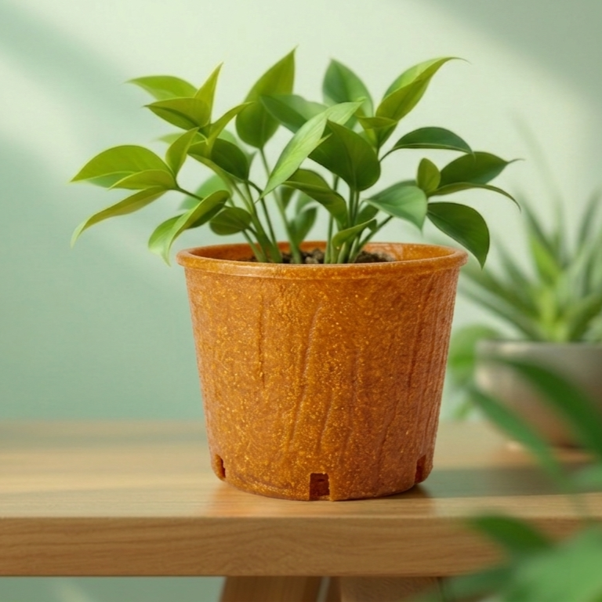

Пластичните саксии по кратка употреба стануваат отпад.
Студентска компанија • Еко иновација
Фрувела
Биоразградлива саксија од овошни лушпи
Еколошко решение што го претвора органскиот отпад во корисен производ за расад, цвеќиња и одржливо садење.

Проблем
Проблемот што го решаваме
Пластиката останува со децении, а тони органски отпад секојдневно завршуваат на депониите.
Овошните лушпи најчесто се фрлаат, иако можат да се искористат.
Производителите на расад и цвеќарниците имаат потреба од практична еко-алтернатива.
Решение
Нашето решение
Фрувела создава биоразградлива саксија од овошни лушпи и природни состојки. Саксијата е доволно цврста за употреба, но постепено омекнува и се разградува во почвата.
Овошни лушпи
Био саксија
Садење
Почва
Производ
Како функционира саксијата?
01
Се полни со земја и растение.
02
Се користи како обична саксија.
03
При пресадување не се вади растението.
04
Целата саксија се закопува и постепено се разградува.
Заштедува време и го намалува ризикот од оштетување на коренот.
Предности
Предности на производот
Намалување на пластичен отпад
Искористување на органски отпад
Полесно пресадување
Локално и одржливо решение
Практична примена во расадници и цвеќарници
Биоразградлив материјал
Состав
Од што е направена саксијата?
Овошни лушпи
Агар-агар
Глицерин
Пченкарен скроб
Вода
Овошните лушпи се главната органска основа. Агар-агарот и пченкарниот скроб помагаат саксијата да ја задржи формата и постепено да омекнува во влажна средина. Глицеринот дава еластичност за саксијата да не пука пред садење. При разградба, овошните лушпи внесуваат органска материја во почвата и можат да ослободат мали количини хранливи елементи како калиум, калциум, магнезиум, фосфор и азот.
Процес
Процес на производство
Собирање овошни лушпи
01Селекција и подготовка
02Варење и блендирање во паста
03Додавање природни состојки
04Обликување во калапи
05Сушење и тестирање
06Пазар
Кој би го користел производот?
Производители на расад
Цвеќарници
Агроаптеки
Градинарски центри
Хоби-градинари
Фрувела започнува локално, со директна продажба кон расадници, цвеќарници и агроаптеки, а подоцна може да се прошири преку онлајн продажба и партнерства.
Конкуренција
Што нè прави различни?
Пластични саксии
Евтини се, но создаваат отпад што останува со децении.
Хартиени, тресетни, кокосови
Биоразградливи, но често се увозни и поскапи.
Фрувела
Користи локален органски отпад, има практична примена и се сади заедно со растението.
Финансии
Финансиски потенцијал
Транспарентни проекции базирани на реални пресметки за локален пазар.
Продажна цена
12ден
Производствен трошок
6ден
Маржа по саксија
6ден
Планирана продажба
15.000саксии / месец
Месечен приход
180.000ден
Добивка пред плата
90.000ден
Добивка по една плата
≈ 51.000ден / месец
Почетна инвестиција
400.000ден
Период на враќање
2години
Тим
Тимот зад Фрувела
Матеј Настески
Член на тим
Визуелен идентитет, дизајн и веб-присуство
Симон Стевковски
Член на тим
Маркетинг, партнерства и набавка на органски отпад
Калин Петрушевски
Член на тим
Развој на материјалот, тестирање и производствен процес
Ментор
Лидија Стојчева
Иднина
Идни планови
Подобри калапи и поголем производствен капацитет
Повеќе партнери за собирање органски отпад
Намалување на трошоците преку поголеми количини
Различни големини на саксии
Партнерства со расадници, агроаптеки и градинарски центри
Развој во локален еко-бренд